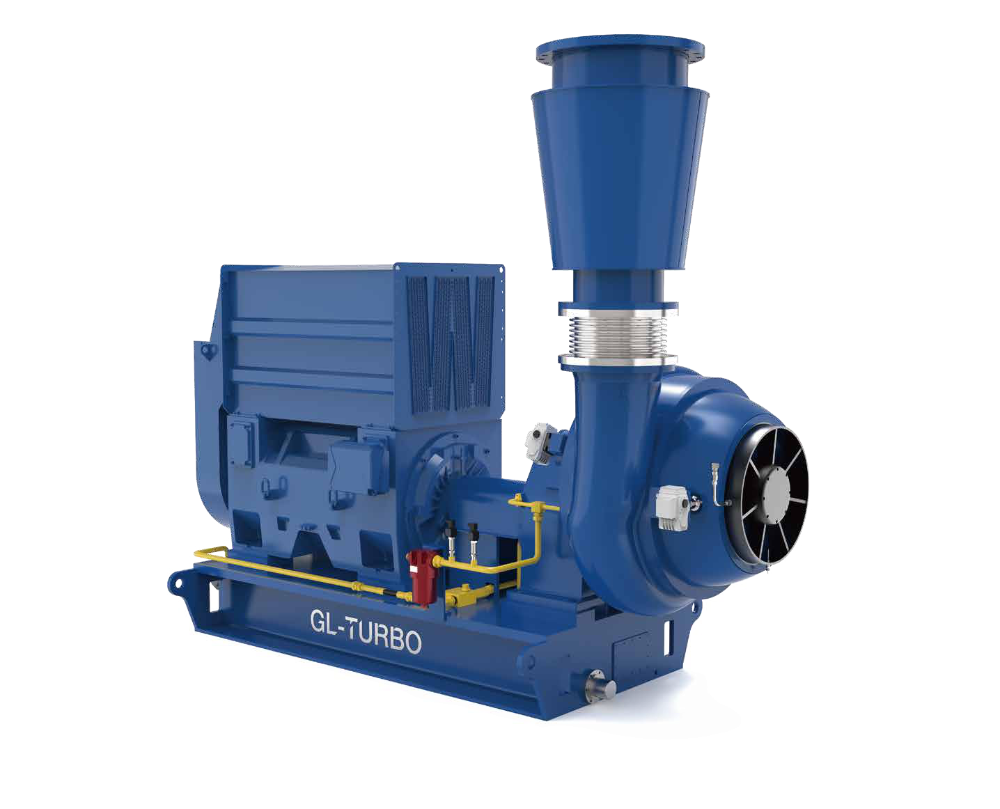
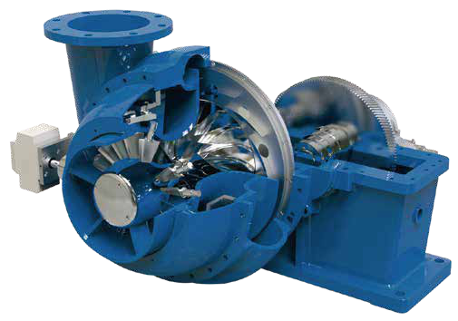
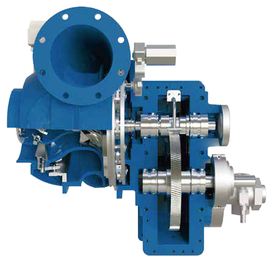

GL Series
Integrally Geared Single-Stage Turbo Blowers
75–4,500 kW | 1,700–150,000 m³/h | 0.1–2.0 bar pressure rise
The GL Series combines a backward-swept impeller, an integral gearbox, and adjustable inlet and discharge guide vanes to deliver oil-free process air or gas. Tilting-pad bearings and intelligent controls support reliable operation across changing process demands.
- Stepless airflow control from 45% to 100% at constant pressure.
- Variable inlet guide vanes and discharge diffuser vanes.
- Force-lubricated tilting-pad bearings.
- Oil-free compression with a vented or purged seal area.
- Applications include water and wastewater, petrochemical, utility power, food and beverage, and industrial processes.
Aerodynamic Design
Backward-swept impellers with splitter blades support stable operation and a broad efficient operating range.
Flow Regulation
Inlet guide vanes and a variable vane diffuser adjust airflow while maintaining stable pressure.
Packaged System
A complete package can include the motor, local control panel, lubricant system, filters, silencers, valves, and an optional enclosure.